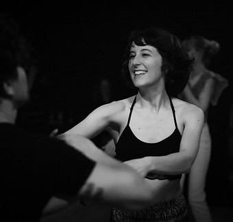
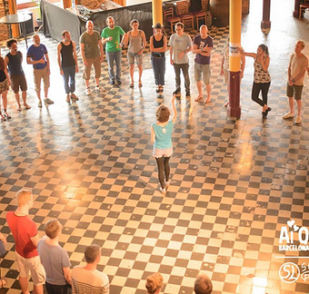
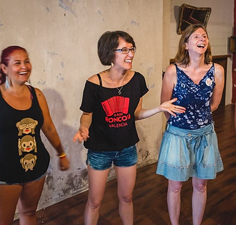

Sarah Collings



Sarah fell in love with forró while living in Milan and she hasn’t looked back since. Building on her experience in sports and language education, Sarah launched and started to teach forró classes in Brussels in 2014. She continues to oversee and guide the school, while also travelling across Europe and occasionally beyond to teach at workshops and festivals. She is also one of the founders of the Be Forró association in Brussels, working to serve the growing forró community in the city.
Sarah's belief that a teacher should be forever an enthusiastic student has led her to study with many teachers and dancers, both within forró and beyond (samba de gafieira, tango, body percussion, and more…) In particular, her initial work and partnership with Ricardo Ambrózio shaped her vision of forró, and more recent studies with Sheila Santos have significantly enriched her approach and methodology. Beyond these two crucial influences, Sarah has been privileged to be able to teach and study with many other talented teachers which has broadened her horizons and skills as both leader and follower.
This desire to learn and share her knowledge also resulted in the creation of the Encontro Pedagogico in 2017 in collaboration with Emilie Gasia. This is an annual meeting of forró teachers to collaboratively discuss and enhance the quality of their work. In parallel Sarah has created the Projeto Monitores to develop assistants and future teachers here in Brussels.
Sarah's classes emphasise the importance of presence, connection with our partner and musicality. Musicality has in fact been one of the focal points in her teaching and research for many years now and has become one of the most requested topics from festival and workshop organisers. In the classroom, she also prides herself on (trying to!) achieve that oh-so-delicate balance between technique and creativity, precision and freedom, focus and fun.